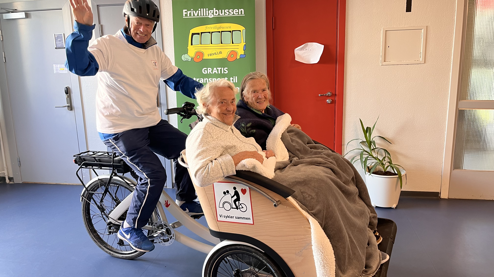

Medvind gir eldre frihet på tre hjul
Alle har godt av litt frisk luft, en god samtale og følelsen av å være en del av livet som skjer rundt oss. For mange eldre i bydelen er ikke dette lenger en selvfølge. Da kan en sykkeltur på tre hjul bety langt mer enn bare en tur ut.
Gjennom sykkelprosjektet Medvind får eldre og mennesker med redusert mobilitet mulighet til å komme seg ut på tur i nærområdet. De sitter trygt og godt foran på moderne elektriske sofa-sykler, mens frivillige sykkelpiloter sørger for en rolig, trygg og hyggelig opplevelse. Det handler ikke om å komme raskest mulig frem. Det handler om å kjenne vinden i håret, se kjente gater, høre lydene fra nærmiljøet og få en stund ute sammen med et annet menneske.
Målet til Medvind er enkelt og viktig: å gi mennesker som ikke lenger kommer seg så lett ut på egen hånd, muligheten til å oppleve bevegelse, frihet og fellesskap.
I Vestre Aker er tilbudet knyttet til fire steder i bydelen: Vinderenhjemmet, Hovseterhjemmet, Pilotveien omsorgsboliger og Diakonveien omsorg+. Her står syklene klare, men for at tilbudet skal leve og utvikle seg videre, trengs det flere frivillige som vil være med.
Sykkellaget i Stiftelsen Vestre Aker Frivilligsentral ble etablert for mer enn ti år siden, med støtte fra Eckbos Legat. Siden starten har Per E. Koch vært kaptein på laget. Han har fulgt prosjektet tett gjennom mange år og vet hvor stor betydning en tilsynelatende enkel sykkeltur kan ha.
«Det handler om å gi folk litt luft i håret igjen.» — Per E. Koch, kaptein for sykkellaget
Medvind er en aktivitet som gir glede begge veier. Passasjerene får komme ut, se noe annet enn veggene inne, kjenne været og få en opplevelse de ofte setter svært stor pris på. Samtidig får den frivillige syklisten både mosjon, frisk luft og et meningsfullt møte med et annet menneske.
For det er nettopp dette som gjør Medvind så fint: Det er ikke bare passasjeren som får noe. Den frivillige får også noe tilbake. En tur på sykkelen kan gi gode samtaler, smil, historier fra gamle dager og små øyeblikk som sitter igjen lenge etter at sykkelen er parkert.
En reise gjennom eget liv
Mange eldre har levd et langt liv i bydelen. De kjenner veiene, parkene, butikkene, skolene og husene. På en sykkeltur kan minnene våkne. Kanskje går turen forbi et sted der de bodde før, en skole barna gikk på, en benk de pleide å sitte på, eller et område som har forandret seg mye. For noen er det nok bare å komme ut og kjenne solen i ansiktet. For andre blir turen en liten reise gjennom eget liv.
Bli frivillig pilot
Nå ønsker sykkellaget flere frivillige piloter. Du trenger ikke å være erfaren syklist. Du trenger ikke å ha jobbet med eldre før. Det viktigste er at du liker mennesker, frisk luft og har lyst til å gjøre noe hyggelig for andre.
Opplæringen tar omtrent én time. Da får du en praktisk gjennomgang av sykkelen, du får prøve den selv, og du får vite det du trenger for å gjennomføre trygge og gode turer. Etterpå bestemmer du selv hvor mye du vil bidra. Det er helt valgfritt hvor mange turer du tar. En vanlig tur varer omtrent 30 minutter, i tillegg til rundt 15 minutter for å gjøre klar sykkelen og sette den på plass etterpå.
Det gjør Medvind til en frivillig oppgave som er lett å tilpasse egen hverdag. Du kan bidra mye, eller du kan bidra litt. Begge deler betyr noe.
Medvind er et godt eksempel på hva frivillighet kan være når den er på sitt beste: praktisk, nært, menneskelig og fullt av liv. En sykkel, en frivillig og en passasjer kan sammen skape en opplevelse som gjør dagen større.
Kontakt Espen ved Stiftelsen Vestre Aker Frivilligsentral:
espen@vestreaker.frivilligsentral.no
Kanskje er det nettopp du som kan gi noen i bydelen litt mer frihet, litt mer fellesskap – og litt mer vind i håret.